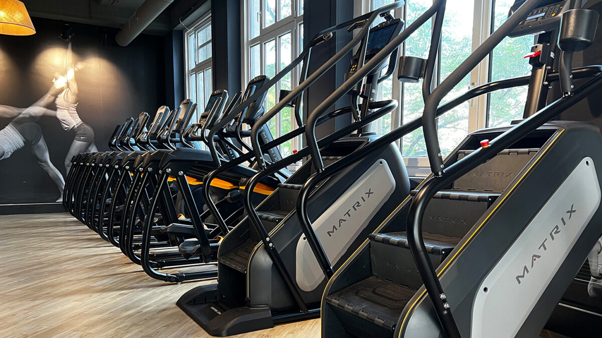

Stair Climber Machine
Go to bottom
The Stair Climber Machine is a popular cardio machine that involves scaling a rotating staircase, providing a high-intensity aerobic exercise. It offers multiple benefits, including improved cardiovascular health, lower body muscle development, enhanced stability and balance, and functional training for the legs. A Stair Climber workout closely mimics actual stair climbing, engaging essential muscles and promoting fitness applicable to everyday life. This cardio machine effectively improves cardiovascular endurance, functional strength, weight loss, and overall fitness. Incorporating a Stair Climber into your fitness routine or home gym can provide a challenging cardio workout and help you develop strength and endurance in the lower body.

Benefits of the Stair Climber
- Cardiovascular Health: The Stair Climber provides an excellent cardio workout, elevating your heart rate and improving cardiovascular endurance. It helps strengthen the heart and lungs, enhancing overall cardiovascular health.
- Lower Body Muscle Development: Using the Stair Climber engages and works the muscles in your lower body, including the quadriceps, hamstrings, glutes, and calves. Regular use can lead to increased muscle strength, tone, and endurance in these areas.
- Balance and Stability: The Stair Climber requires coordination and balance as you navigate the rotating staircase. This can help improve your overall balance and stability, benefiting daily activities and reducing the risk of falls.
- Functional Leg Training: Climbing stairs is a functional movement that we encounter in our daily lives. The Stair Climber mimics this movement, providing functional training for your legs and helping you develop strength and endurance specific to real-life activities.
Muscles Targeted
- Glutes: The gluteal muscles, including the gluteus maximus, medius, and minimus, are activated during the Stair Climber exercise, particularly during the upward pushing phase.
- Hamstrings: Situated at the back of the thigh, the hamstrings work as stabilizers and assist in leg movement during stair climbing.
- Glutes: The gluteal muscles, including the gluteus maximus, medius, and minimus, are activated during the Stair Climber exercise, particularly during the upward pushing phase.
- Calves: The calf muscles, including the gastrocnemius and soleus, play a significant role in propelling the body upward during the stair climbing motion.
Back to Home